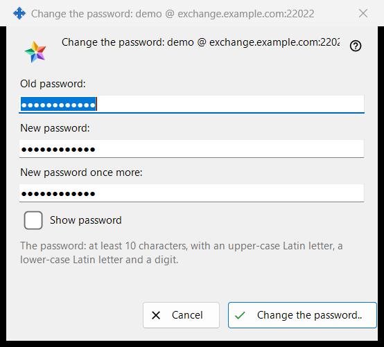
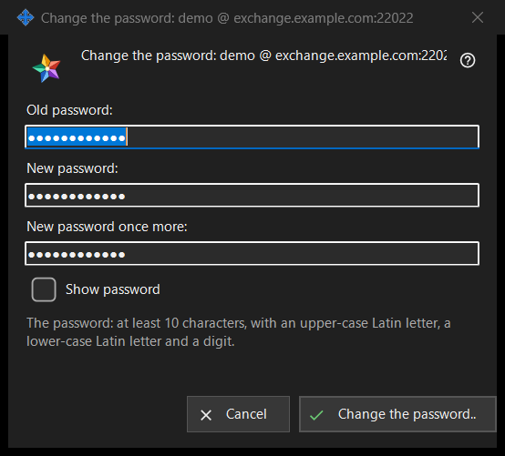

Change the password
What this is for
Changes the password of the exchange account this PC is signed in to. It opens from 'Change the password..' in the 'Exchange account' group of the Share Manager settings, a button shown only while the account is connected. The caption names the account as login @ server. The window sends nothing itself: it checks what you typed and hands it back, the connection of this PC sends it, and the server has the last word.


In this order
- In the Share Manager settings find the group 'Exchange account' and press 'Change the password..'.
- Type the 'Old password:'.
- Type the 'New password:' and repeat it in 'New password once more:'.
- Tick 'Show password' to check the three fields.
- Press 'Change the password..'; if a warning line appears, correct the field and press again.
- Read the answer shown in the group.
The elements
The three fields
The old password, the new one and the new one repeated. All three are masked; the single 'Show password' tick unmasks them together and is not remembered. The fields are emptied when the window closes.
The password rule
The line under the fields says: 'The password: at least 10 characters, with an upper-case Latin letter, a lower-case Latin letter and a digit.' The window checks it at once, so you get an answer before anything is sent.
The warning line
The button checks in this order: 'Give the old password.', 'The two passwords differ.', then the rule: 'The password is shorter than 10 characters.', 'The password has no upper-case Latin letter.', 'The password has no lower-case Latin letter.', 'The password has no digit.'. The first problem stops the check, the window stays open and nothing is sent.
What happens after you press it
A good entry closes the window and the group shows the answer. Success: 'The password is changed. This computer keeps working, and the account's other devices must sign in again.' Other answers: 'The old password did not fit.', 'Too many attempts. Wait a minute and try again.', 'The server refused the password change.' and 'There is no connection to the server. Connect and try again.'. When the server rejects a weak password, its own sentence is shown.
Cancel and keys
'Cancel' or Esc closes the window and changes nothing; Enter presses 'Change the password..'.
Manager settings · SFTP sharing settings · Exchange server settings